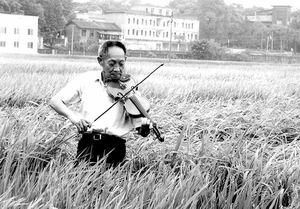

“共和国勋章”获得者、中国工程院院士、国家杂交水稻工程技术研究中心主任、湖南省政协原副主席袁隆平，因多器官功能衰竭，于2021年5月22日13时07分在长沙逝世，享年91岁。
我们生活在一个没有饥荒的年代，在小学的教材课本里，学习到了袁隆平院士的相关事迹，似乎是就被灌输进了一个概念，这位老先生很伟大，因为他发明的杂交水稻，养活了亿万人。但终究还是没有亲身经历过那段吃不上饭的时代，对先生的敬仰，也仅仅是停留在表面。随着年龄的增长，自以为对事物的认知有了更高的层次，自以为很多我们之前所倡导，提倡的事情很多都不是客观或者其产生的影响并没有所宣传的那么深远，我甚至还产生过相当无知，无礼的想法。这个老头都这么大了，真的还能搞科学研究吗？杂交水稻能算的上发明吗？如今的粮食产量如此之高，早就有了更新的技术替代了杂交稻技术吧？等等诸如此类。
在当自己真的了解了关于袁老的生平和有关他所培育出的杂交稻给整个世界所带来的福祉，我才真正体会到什么叫国士无双。
举国上下，应该绝大多数人，都会为袁老的逝世感到悲痛，逝者已矣，我这里想分享两个我所了解到的先生的故事。
关于杂交稻。
因为不是专业人士，当中提到的专业术语大多来自资料
在杂交稻出现以前，自然生长的水稻，大多是矮矬穷，只有极少数能抵抗秉承还和各种疾病的植株，农民能做的也就是把性状优良的后代保留下来，用作来年的种子。但优良品种的后代又有绝大多数越长越挫，因为他们的“爹”一样，属于近亲繁殖的产物，随着一代又一代的性状分离，各种隐藏的缺点会不断暴露出来，最终泯然众人矣。在近代基因科学出现以前，无法优良育种是千百年来农民无法摆脱的桎梏。水稻是雌雄同花的植物，所谓近水楼台先得月，即便普通的水稻皮旁边生长着优良性状的水稻，也是很小的概率可以交配成功。育种工作，是整个世界当前科技水平下，为数不多的，不能靠机器，不能靠AI，只能靠人力一点点来啃的超级S级难度史诗级副本。
而袁隆平院士，最厉害最牛的地方就是，他是世界上第一个，开荒推下该副本的男人！他所开创的三系杂交育种研究，就是给后来人要下副本的团队提供了一个免费的外挂。
更多关于“三系杂交稻“的知识，大家有兴趣的可以去深入了解下，但是，为了不让大家对先生还停留在小学课本里的印象，我也试着简单解释一下。
之前提到了，水稻育种，最难的地方就是雌雄分离，袁隆平在千百次实验中，成功获得了水稻中的“伪娘”，学名“雄性不育系”水稻，天然雄性不育水稻，也就是没有繁殖能力，而雌花却可以完全正常的安全受孕，这就解决了上面提到的育种问题，近水楼台的问题也就不存在了，性状优良的水稻也可以和这种“伪娘”水稻正常交配育种，后代也就具备了优良的性状，不会继续矮挫丑！这个发现就是无敌的存在，“Amazing”！
该种类型的水稻也有问题，就是和普通性状优良的水稻繁育的后代，其雄花又具备了繁殖能力。到这里，袁老的圣光再次出现！他又发现了水稻伪娘Plus的版本，这种水稻，尚未觉醒，还有交配的欲望，但可以保证繁育的后代全是觉醒了的伪娘，学名叫“雄性不育保持系”。
伪娘水稻和伪娘plus水稻交配，后代才是雄性不育系，而伪娘和正常水稻育种，后代均可以恢复生育能力，也就是以上的三个系列结合起来，就形成了一个完整的闭环，三系配套，杂交育种。
也就是我们今天能收获各种抗病毒，抗疾病的水稻，吃到各种不同口味的大米，全都要归功袁隆平院士。而之前有些无良的公知，说“杂交水稻产量高，但不好吃”，这个概念又涉及到另外一个专业知识，“直链淀粉”的含量，决定着大米好吃不好，再回过头来看整个杂交稻的技术过程，没有半点跟直链淀粉有关，它只是给了水稻一个稳定遗传优良性状的机会而已，如果直链淀粉也和遗传基因有关，那么完全可以通过杂交水稻技术，把这种好性状发扬光大。这就跟鼓吹“教育无用论”一样，因为看到几个教育无用论的成功案例，就质疑整个教育体系。据资料显示，如今的杂交水稻，在产量和质量方面，可以碾压市面上99%的常规育种品种。
好了，我也很少认真的阅读资料，并理解其中的内容了，希望大家通过这冰山一角的介绍，对袁隆平院士所带来的功德有一个重新的认识，国士无双！
关于生活，一封家书
回到生活，我也偶然看到一封关于袁隆平院士写给自己已故母亲的信，从言辞中可以了解到，先生的母亲对先生的一生的成长影响之深远，也能从侧面了解到先生敬爱自己的母亲，热爱自己的工作，生活质朴，为人忠厚，对国家对社会忠诚，对团队负责，如此精神，我辈楷模。
以下为家书全文。
亲爱的妈妈：
稻子熟了，妈妈，我来看您了。
本来想一个人静静地陪您说会话，安江的乡亲们实在是太热情了，天这么热，他们还一直陪着，谢谢他们了。
妈妈，您在安江，我在长沙，隔得很远很远。我在梦里总是想着您，想着安江这个地方。
人事难料啊，您这样一位习惯了繁华都市的大家闺秀，最后竟会永远留在这么一个偏远的小山村。还记得吗？1957年，我要从重庆的大学分配到这儿，是您陪着我，脸贴着地图，手指顺着密密麻麻的细线，找了很久，才找到地图上这么一个小点点。当时您叹了口气说：“孩子，你到那儿，是要吃苦的呀……”我说：“我年轻，我还有一把小提琴。”没想到的是，为了我，为了帮我带小孩，把您也拖到了安江。最后，受累吃苦的，是妈妈您哪！您哪里走得惯乡间的田埂！我总记得，每次都要小孙孙牵着您的手，您才敢走过屋前屋后的田间小道。
安江是我的一切，我却忘了，对一辈子都生活在大城市里的您来说，70岁了，一切还要重新来适应。我从来没有问过您有什么难处，我总以为会有时间的，会有时间的，等我闲一点一定好好地陪陪您……哪想到，直到您走的时候，我还在长沙忙着开会。那天正好是中秋节，全国的同行都来了，搞杂交水稻不容易啊，我又是召集人，怎么着也得陪大家过这个节啊，只是儿子永远亏欠妈妈您了……其实我知道，那个时候已经是您的最后时刻。我总盼望着妈妈您能多撑两天。谁知道，即便是天不亮就往安江赶，我还是没能见上妈妈您最后一面。
太晚了，一切都太晚了，我真的好后悔。妈妈，当时您一定等了我很久，盼了我很长，您一定有很多话要对儿子说，有很多事要交代。可我怎么就那么糊涂呢！这么多年，为什么我就不能少下一次田，少做一次实验，少出一天差，坐下来静静地好好陪陪您。哪怕……哪怕就一次。
妈妈，每当我的研究取得成果，每当我在国际讲坛上谈笑风生，每当我接过一座又一座奖杯，我总是对人说，这辈子对我影响最深的人就是妈妈您啊！无法想象，没有您的英语启蒙，在一片闭塞中，我怎么能够阅读世界上最先进的科学文献，用超越那个时代的视野，去寻访遗传学大师孟德尔和摩尔根？无法想象，在那个颠沛流离的岁月中，从北平到汉口，从桃源到重庆，没有您的执着和鼓励，我怎么能获得系统的现代教育，获得在大江大河中自由翱翔的胆识？无法想象，没有您在摇篮前跟我讲尼采，讲这位昂扬着生命力、意志力的伟大哲人，我怎么能够在千百次的失败中坚信，必然有一粒种子可以使万千民众告别饥饿？他们说，我用一粒种子改变了世界。我知道，这粒种子，是妈妈您在我幼年时种下的！
稻子熟了，妈妈，您能闻到吗？安江可好？那里的田埂是不是还留着熟悉的欢笑？隔着21年的时光，我依稀看见，小孙孙牵着您的手，走过稻浪的背影；我还要告诉您，一辈子没有耕种过的母亲，稻芒划过手掌，稻草在场上堆积成垛，谷子在阳光中毕剥作响，水田在西晒下泛出橙黄的味道。这都是儿子要跟您说的话，说不完的话啊……
妈妈，稻子熟了，我想您了！
儿：平
“我有着一个梦，走在田埂上，它同我一般高，我拉着我最亲爱的朋友，坐在稻穗下乘凉……”
